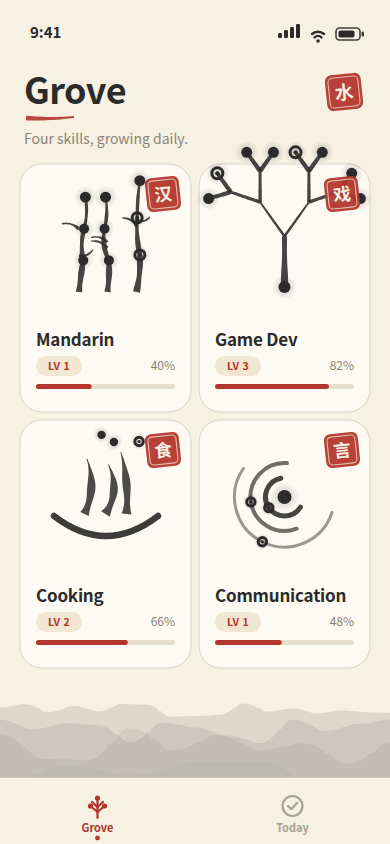
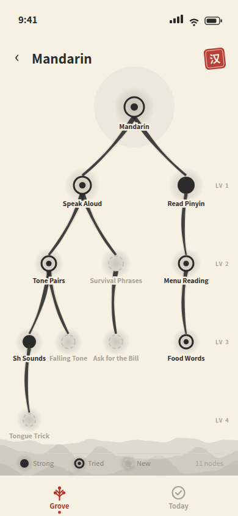
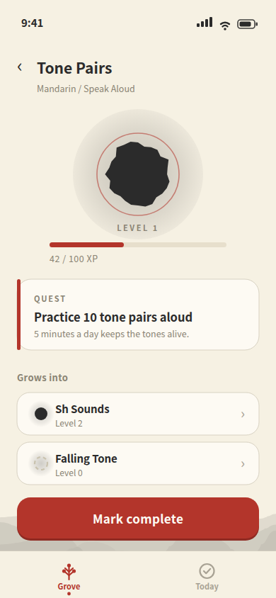
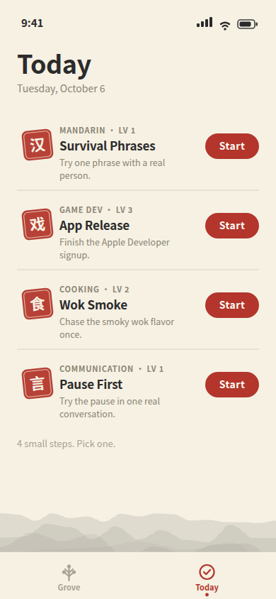

I am building a skill tree app for my real life: the kind of tree video games use to show you exactly where you stand and what to do next. I rendered five visual styles, picked the Chinese ink wash one, and prototyped four phone screens in Penpot. Your Mandarin homework has never looked this calm.
All five visual styles, live and tappable: Nocturne, Trailhead, Shui Mo, Insert Coin, Commit Canopy. Includes the 100-level stress test.
Open the directions →Games are honest with you. You are level 12. You need 300 more XP. Your next quest is right there, glowing. Real life gives you none of that. You just vaguely feel behind at everything.
The app fixes it with four separate skill trees: Mandarin, Game Dev, Cooking, Communication. Every node is a real skill with a level, an XP bar, and one concrete next quest. Tap a node and the app tells you the single smallest thing to do next. No planning, no guilt spiral. Just the next dot.
I built five full directions before committing to anything:
Shui Mo won because it makes progress feel calm instead of loud. Ink branches, warm rice paper, and one vermillion red seal stamp for what is done. It is the only style where staring at how far you have left feels pleasant. Most productivity apps scream at you. This one pours tea.
Grove The home screen. All four skills as little ink trees in a two by two grid, each with its level, an XP bar, and a red seal stamp showing progress. You see your whole life at a glance.

Tree One skill, opened up. This is Mandarin, five levels deep, eleven nodes. Solid dots are done, rings are tried, dashed outlines are undiscovered. The branches are brush strokes, not straight lines, because straight lines are for org charts.

Node Tap any node and you get its detail: big ink dot, level, XP bar, the quest spelled out (practice 10 tone pairs aloud), what it grows into next, and a big red Mark Complete button. One screen, zero ambiguity about what to do.

Today The only screen that matters on a busy day. It picks the shallowest undiscovered node in each skill and lists it with a Start button. You do not plan. You do not prioritize. You tap Start four times.

Big trees get unreadable, so the tree changes what it shows as you zoom. Far out, it is just dots. Closer, the dots grow. Closer still, real skill names appear. All the way in, you get level pills, XP bars, quest lines, and tappable cards. The tree tells you more the closer you look, like a real map. I stress tested it up to 100 levels and it holds.
All four screens as editable boards in Penpot, the open source Figma alternative. Free to remix.
Open the prototype →Games figured out motivation decades ago: show the player where they stand and make the next step obvious. I just painted it in ink.